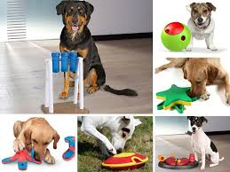
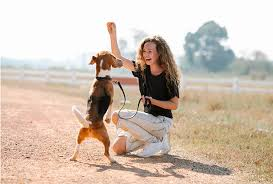
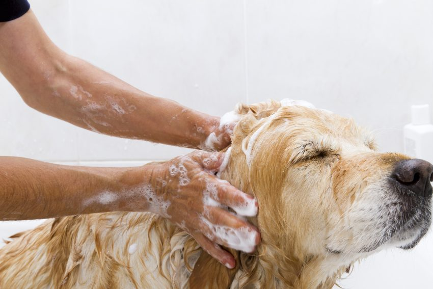
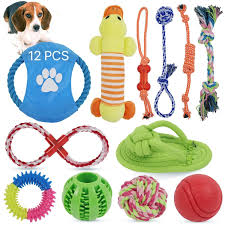

CUIDADOS
Alimento balanceado:
Elige alimento balanceado de alta calidad, adaptado a su edad, tamaño, raza y nivel de actividad física.

Horarios de alimentación:
Establece horarios fijos de alimentación para evitar problemas digestivos y mantener un peso saludable.
Agua:
Asegura que siempre tenga acceso a agua fresca y limpia, renovándola varias veces al día.
Paseos diarios:
Proporciona paseos diarios ajustados a sus necesidades: razas grandes necesitan más ejercicio que las pequeñas.
Juego interactivo:
Incluye sesiones de juego interactivo (pelotas, cuerda, búsqueda de objetos) para estimular su mente y cuerpo.
Cepillado de pelaje:
Cepilla su pelaje con regularidad: razas de pelo largo cada 1-2 días, razas de pelo corto cada semana.

Cuidado dental:
Realiza cepillado dental mínimo 2-3 veces por semana para prevenir enfermedades bucales y mal aliento.
Uñas:
Corta sus uñas cada 2-3 semanas, evitando tocar la vena que contiene cada pataña.
Cuidado de oídos:
Limpia sus oídos cada 15 días con productos específicos para perros, especialmente en razas de orejas caídas.
Baños:
Baña lo cada 4-6 semanas con champú formulado para su tipo de pelaje y piel.
Chequeos veterinarios:
Programa chequeos veterinarios anuales (o cada 6 meses en perros mayores) para detectar problemas de salud a tiempo.

Vacunas:
Mantén al día su calendario de vacunación contra enfermedades como moquillo, parvovirus y rabia.
Prevención de parásitos:
Aplica tratamientos preventivos contra pulgas, garrapatas, ácaros y gusanos intestinales de forma regular.
Socialización:
Socialízalo desde cachorro con otros perros, personas de diferentes edades y entornos variados (parques, calles, tiendas permitidas).
Entrenamiento básico:
Enseña comandos básicos (sentado, quieto, ven aquí, suelta) mediante refuerzo positivo (golosinas, elogios, cariño).
Espacio de descanso:
Proporciona un espacio seguro y cómodo para dormir, con una cama adecuada a su tamaño.
Ansiedad por separación:
Evita dejarlo solo por períodos muy largos; usa juguetes interactivos o música para calmarlo si es necesario.
Protección climática:
Protegélo del clima extremo: en verano evita los paseos en horas de calor, en invierno usa ropa si es necesario.
Seguridad del hogar:
Mantén seguras las áreas donde vive: guarda productos tóxicos, cables eléctricos y objetos pequeños que pueda tragar.
Vínculo afectivo:
Brinda cariño, atención y tiempo de calidad todos los días, ya que son animales sociales que necesitan vínculo afectivo.
Identificación:
Coloca un collar con placa de identificación y considera el microchip para facilitar su recuperación si se pierde.
Entrenamiento de higiene:
Enseña a tu cachorro a hacer sus necesidades en el lugar adecuado desde temprana edad.
Juguetes seguros:
Proporciona juguetes adecuados a su tamaño y edad para evitar riesgos de asfixia o traumatismos.
Cuidado de la piel:
Revisa su piel periódicamente en busca de irritaciones, ronchas, bultos o señales de parásitos.
Ejercicio mental:
Realiza actividades que estimulen su mente, como juegos de olfato o entrenamiento de trucos nuevos.
Viajes:
Si viajas con tu perro, asegúrate de que tenga espacio cómodo, agua y documentos de salud al día.
Cuidado post-operatorio:
Si se somete a cirugía, sigue las indicaciones veterinarias para su recuperación, incluyendo reposo y cuidados de heridas.
Prevención de obesidad:
Controla su peso mediante una alimentación adecuada y ejercicio regular; evita darle demasiadas golosinas.
Adaptación a cambios:
Ayúdalos a adaptarse a cambios en el hogar (nuevos miembros, mudanzas) con paciencia y rutinas constantes.
Educación continua:
Mantén el entrenamiento a lo largo de su vida y actualízate sobre nuevas técnicas y cuidados veterinarios.

MENU
SIGUIENTE
ANTERIOR
INICIO